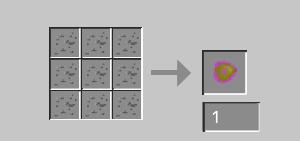
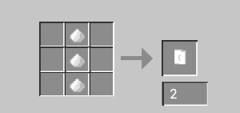

Recipes
Strange World portal Igniter: 4 Orange Candles, 4 Poisonous Potatoes, 1 Orange Wool

Strangonium Helmet: 5 Strangonium

Strangonium Chestplate: 8 Strangonium

Strangonium Boots: 4 Strangonium

Strangonium Hoe: 2 Strangonium, 2 Sticks

Cheese Maker: 6 Strangonium, 1 Stick, 1 Furnace, 1 Stone Block

Strangonium: 9 Strangonium Crumbs
Marsh Mello: 3 Sugar

Stuff
Be carful if you have Strangonium Boots on and then get some Strangonium Crumbs...
Put a milk bucket in the Cheese Maker and you (or another entity) must walk on it to make cheese
Find Strangonium Ore in levels -64 to 16
Get Advancments from making and eating cheese or geting Strangonium armor
Tame marshlings with Marsh Mellos, they are ridable(no saddle needed[yet...])
Credits
By Bob Robertson-------------------------------
Mods made with Mcreator